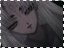
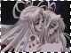

I n f o r m a t i o n /evil.html
As time went on, a presence seemed to have came upon Hinoto. She no longer has dreams and therefore cannot predict the future. But she conveniently predicted the Sakurazukamori at the two-tiered bridge of Tokyo and had Subaru go by himself. As Subaru left, a smile slowly spread on her lips as she told Subaru to be careful. This later caused Subaru immense pain, as he watched himself kill his beloved one. Hinoto might as well have killed Subaru, because his loved one no longer exists, and his true wish is now meaningless. Later, Inuki, Yuzuriha's dog sensed the presence in Hinoto and showed his disapproval. Hinoto purposely separated Kamui, Sorata, Yuzuriha and Arashi by telling them that the Dragons of Earth will appear in two different places. She then prevented Sorata from going to Arashi and Yuzuriha, causing Sorata to get seriously injured trying to protect Arashi from a great distance off. Hinoto uses charms that creates shikigami. The shikigami have various purposes and assume various forms. They may be used as attackers (men in black & black sunglasses), messengers (blue bird-like spirit or black crow), or spies. Hinoto uses them often, to attack Kamui, prevent the Dragons of Heaven from aiding each other, etc.
Later on, the presence is actually seen as it overpowered Hinoto and was constantly taunting her. The image projected is a self-image of Hinoto. It is said that Hinoto has been cursed by an evil spirit that originated from the charm that also creates creatures to attack and attempt to kill Kamui. It is this evil spirit that caused Hinoto to lie about her dreams and divide the Dragons of Heaven's powers. It was Hinoto who froze Kamui and Sorata and prevented them from helping the other Dragons of Heaven. It seems that Hinoto has developed a dark side that she was not aware of at first. She had wished for the future to change instead of preserving it, and as the Dreamgazer of the Dragons of Heaven, she cannot accept that. This is the primary reason why she saw the destruction of the world in her dreams. She was led to believe that there could only be one future for the world, so she shouldn't even hope otherwise. Hinoto finally realized this and killed herself, along with evil, darkness that had resided in her. Thus, the seal of the Holy Sword is broken, Kamui and Sorata became free, and all of their destinies now remain unsettled. Hinoto had wished for the future to change so she would not have to suffer anymore. She thought that if the world changed, she would continue to remain only as a Dreamgazer. This is also why she tried to kill Kamui with her charms/tailsman, for she wanted the world to change, and killing Kamui would end the world. She finally realized that it's wrong to wish for the world to change, and she killed herself so that Kamui would have a chance at saving the world. Hinoto's true wish is to believe in Kamui and believe that he can save the world.
x
clear x